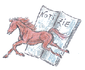
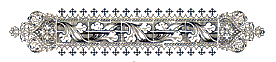

|




Per la carriera di agosto sono state estratte nell'ordine:
ONDA -
TARTUCA -
SELVA
Nella serata di domenica 7 luglio 2013, si è svolta a Palazzo Pubblico di Piazza del Campo l'estrazione delle tre Contrade mancanti per la Carriera dell'Assunta.
Alle 7 Contrade che correranno di diritto la Carriera del 16 agosto 2013
LUPA, TORRE, BRUCO, CHIOCCIOLA, AQUILA, NICCHIO ED OCA
      
si sono aggiunte
ONDA, TARTUCA E SELVA.
  
Il quadro completo vede quindi
LUPA, TORRE, BRUCO, CHIOCCIOLA, AQUILA, NICCHIO, OCA, ONDA, TARTUCA E SELVA.
SARA' UN PALIO CORSO CON LE STESSE CONTRADE DI QUELLO DEL 2 APRILE 1739, VINTO DAL BRUCO

Per ulteriori informazioni sull'estrazione, cliccate qui.
E' online il video dell'estrazione, a cura di Siena TV.
È online il video della carriera!!!
Per ulteriori filmati, visitate il nostro canale su YouTube.
HA VINTO L'OCA!!!


L’ Oca con Giovanni Atzeni detto Tittia ed il grigio Guess trionfano di “prepotenza” questa splendida e combattuta Carriera di Provenzano.
Un Palio davvero al cardiopalma a partire dai momenti convulsi della fase della mossa che è durata oltre 45 minuti.
Questo l’ordine d’ingresso tra i canapi: Valdimontone, Lupa, Torre, Istrice, Leocorno, Civetta, Oca, Onda, Pantera e Nicchio di rincorsa. La sorte ha voluto vicine le rivali Civetta e Leocorno – che però è rimasto sempre nelle retrovie – e il Valdimontone in prima posizione e la rivale Nicchio di rincorsa.
Il mossiere Bartolo Ambrosione ha dovuto richiamare tutti fuori ben sette volte. Confusione indescrivibile tra i canapi, con l’Istrice (due i richiami dal mossiere) che non ha mai rispettato la sua quarta posizione, portandosi sempre al secondo posto a fianco della rivale Lupa.
Il Leocorno non ha quasi mai cercato la posizione verso il canape anteriore ed è rimasto sempre dietro.
Dopo il quarto rientro tra i canapi, il Nicchio nota che il Valdimontone è leggermente indietreggiato dal canape anteriore e fianca. Parte fortissimo ugualmente proprio il Montone, seguito dall’Istrice e dal Leocorno. Ambrosione però invalida subito la mossa. Nulla da fare, bisogna ripetere tutto.
Confusione sempre più palpabile in mezzo ai canapi con i cavalli, quello di Onda, Oca ed ad un certo punto anche quello della Lupa che iniziano a scalciare. Altre tre volte Ambrosione fa uscire tutti.
Bartoletti su Lo Specialista si distrae mezzo istante e Grandine di rincorsa coglie l’attimo perfetto e fianca.
Partono fortissimi la Torre, dietro l’Oca e a seguire l’Istrice. Nerbate dell’Istrice alla Fonte nei confronti della Lupa. Pusceddu in questo modo non ha permesso ad Andrea Mari su Indianos di prendere la perfetta traiettoria al primo San Martino. E’ la Torre con Gingillo su Mocambo ad arrivare primo a San Martino ma Tittia con Guess compie un vero capolavoro ed affronta un San Martino dall’interno al centimetro portandosi così in prima posizione seguito dalla Torre. All’altezza del palco delle comparse Murtas cade da Morosita Prima che prosegue la sua corsa scossa. L’Oca mantiene la testa tallonata dalla Torre, ci prova anche la Pantera con Silvano Mulas su Pestifero a raggiungere l’Oca ma al secondo San Martino scivola dal cavallo che prosegue la sua corsa scosso. Arriva da dietro forte la Lupa con Andrea Mari su Indianos che prova una rimonta straordinaria ma viene spesso bloccato dallo scosso della Pantera.
Tittia su Guess effettua le due ultime curve, San Martino e Casato, davvero perfette tallonato dalla Lupa che è davvero a un millimetro dall’Oca. Tittia vince però di “prepotenza” bloccando all’arrivo anche con il nerbo la Lupa. Andrea Mari cade da Indianos proprio all’arrivo impattando nello steccato.
Il nerbo di Tittia si alza al cielo e così Tittia riporta il Palio in Fontebranda a distanza di soli due anni. Un Palio davvero bellissimo lottato per tre giri e non scontato sino alla fine.
Ennesimo capolavoro di Fontebranda che, in silenzio, ha costruito un Palio tutto fatto in casa: Guess è di Fabio Romanelli ocaiolo ed è allenato proprio da Tittia che, anche se ufficialmente, non è più il fantino di Contrada – qui ha riportato le sue vittorie e qui si sente a casa. Un successo tutto meritato per Tittia che ha lottato per tre giri. Una vittoria stra-meritata per Guess, il grigio troppo spesso sfortunato ma nel quale Fabio credeva moltissimo e con caparbietà ha continuato a portare in Piazza. Ha avuto ragione lui, ha avuto ragione Tittia nel credere in questo forte grigio che era stato solo sfortunato. Guess ha vinto alla grande ed ha vinto nella sua Contrada per il suo proprietario, per tutta Fontebranda che adesso inizia la sua festa senza fine.
Guess, il cavallo vittorioso!!!
Cliccate qua sotto sul link e vedrete i filmati girati dallo Staff del nostro sito, in esclusiva, dedicati al cavallo vittorioso, GUESS (i filmati si riferiscono ad una precedente partecipazione del cavallo e quindi i colori non appartengono alla Contrada vittoriosa di stasera).
Il digiuno della Lupa
Con il Palio del 2 luglio 2013 la Lupa ha eguagliato, con 24 anni, il suo massimo di anni di assenze di vittorie.
La prima volta avvenne dal 17 agosto 1785 al 16 agosto 1809.
Le cadute di Voglia
Silvano Mulas detto Voglia, nella sua carriera di fantino è caduto 3 volte e sempre a S.Martino
| 16.8.2011 |
Istrice |
3° S.Martino |
(Marrocula) |
| 16.8.2012 |
Pantera |
1° S.Martino |
(Gammede) |
| 2.7.2011 |
Pantera |
2° S.Martino |
(Pestifero) |
I protagonisti
Foto di Roberto Parnetti
PER INGRANDIRE, CLICCARE SULL'IMMAGINE


Gli ospiti del Comune
- Ambasciatore Repubblica Popolare Cinese in Italia S.E. Wei Ding
- Sindaco di Livorno Alessandro Cosimi Presidente ANCI Toscana
- Assessore Cultura Regione Toscana Cristina Scaletti
- Sarah Morrison – Console Generale Usa a Firenze
- Dott. Claudio Contini - Telecom Italia Spa-Responsabile Divisione Business
- Carlo Macchitella - Produttore Rai Fiction
- Massimo Ghini
- Gruppo Planet Funk
- Antonio Socci
La Pantera ha vinto anche la Provaccia
La Pantera con Pestifero e Voglia ha vinto la Provaccia. Nessuna novità nelle monte.

Pestifero
La Pantera ha vinto la Prova Generale
La Pantera con Pestifero e Voglia ha vinto la Prova Generale. Nessuna novità nelle monte.
Il Valdimontone ha vinto la quarta prova
Dopo una mossa durata 25 minuti, il Valdimontone con Lo Specilista e Scompiglio ha vinto la quarta prova. Nessuna novità nelle monte.
La Pantera ha vinto la terza prova
La Pantera con Pestifero e Voglia ha vinto la terza prova. Nessuna novità nelle monte. Così l'ordine di ingresso tra i canapi:
Nicchio, Civetta, Onda, Torre, Valdimontone, Oca, Leocorno, Lupa, Pantera e di rincorsa l'Istrice.
L'Onda ha vinto la seconda prova
L'onda con De' e Ozzastru ha vinto la seconda prova. Nessuna novità nelle monte.

Ozzastru
L'istrice ha vinto la prima prova

Naike'
La Contrada dell'Istrice ha vinto la prima prova del Palio di luglio. Questo l'ordine d'ingresso tra i canapi:
VALDIMONTONE Lo Specialista - Jonatan Bartoletti detto Scompiglio
PANTERA Pestifero - Silvano Mulas detto Voglia
OCA Guess - Giovanni Atzeni detto Tittia
CIVETTA Nottambulo - Alessio Migheli detto Girolamo
ISTRICE Naikè - Valter Pusceddu detto Bighino
LUPA Indianos - Andrea Mari detto Brio
TORRE Mocambo - Giuseppe Zedde detto Gingillo
LEOCORNO Porto Alabe - Luigi Bruschelli detto Trecciolino
ONDA Ozzastru - Luca Minisini detto De'
NICCHIO Nicolas De P. Ulpu - Sebastiano Murtas detto Grandine
Le entrate fra i canapi durante le prove
C' è un ordine tradizionale con cui le Contrade prendono posto tra i canapi
durante le prove e quest'ordine viene dettato dall'art.62 del Regolamento del Palio.
Prima prova:
Ordine nel quale le Contrade furono estratte a sorte per partecipare al Palio.
Seconda prova:
Ordine suddetto invertito.
Terza prova:
Ordine d'estrazione della Contrada per l'assegnazione dei cavalli.
Quarta prova:
Ordine suddetto invertito.
Quinta prova:
Ordine avuto dai cavalli per procedere alla loro assegnazione.
Sesta prova:
Ordine suddetto invertito.
L'assegnazione dei cavalli
Cinque nuovi soggetti: Pestifero, Nottambulo, Naikè, Porto Alabe e Ozzastru.
Un solo cavallo già vincitore di un Palio: Lo Specialista, che è nuovamente tornato nel Valdimontone dove giunse primo lo scorso agosto.
- I CAVALLI DEL 2000 -
- I CAVALLI PIU' FEDELI -
I 35 cavalli ammessi alla tratta
Sono 35 i cavalli ammessi alla Tratta di sabato 29 giugno, dopo le prove mattutine e le visite dei veterinari.
I 25 soggetti promossi delle prove mattutine si vanno ad aggiungere ai 10 già ammessi direttamente alla Tratta: Guess, Indianos, Istriceddu, Lampante, Lo Specialista, Magic Tiglio, Marrocula, Misteriosu, Morosita Prima, Nicolas da P. Ulpu.

|
(numero, nome cavallo, proprietario)
1 BONGO BINGO Giancarlo Rossi
2 GIRA E RIGIRA Marco Sampieri
3 GUESS Fabio Romanelli
4 INDIANOS Benedetta Gualtieri
5 ISTRICEDDU Serena Butteri
6 LAMPANTE Alessandro Bandini
7 LO SPECIALISTA Fabio Fioravanti
8 MAGIC TIGLIO Massimo Coghe
9 MARROCULA Alessandro Favilli
10 MASEDU Giuseppe Zedde
11 MIGUEL Simone Santi
12 MISTERIOSU Filippo Toti
13 MOCAMBO Mark Harris Getty
14 MONTIEGO Mark Harris Getty
15 MOROSITA PRIMA Carolina Tacconi
16 NAIKE’ Simone Picchi
17 NERONE SAURO Simone Berni
18 NICOLAS DE P.ULPU Mark Harris Getty
19 NIMENTO Gian Piero Nerli
20 NOTTAMBULO Mattia Marchetti
21 NURKARA Augusto Posta
22 OCCOLE’ Alberto Manenti
23 ONDINA PRIMA Dino Pes
24 ONEGLIA DE OZIERI Luca Francesconi
25 ORIOX Giulia Zingarelli
26 OSVALDO Roberto Danesi
27 OZZASTRU Lucia Toto
28 PECCATRICE Simone Berni
29 PERREDDA Marco Sampieri
30 PESTIFERO Massimo Leonini
31 PHATOS DE OZIERI Giorgio Campanini
32 PITZULU Mario Savelli
33 PORTO ALABE Fabrizio Brogi
34 PORTO REGAL David Tomei
35 SARATOG Marco Grazzini
|
Presentato il Drappellone
Due momenti della presentazione del Palio tenutasi nel Cortile del Podestà del Comune di Siena.
Da sinistra: il Sindaco Bruno Valentini, Claudia Nerozzi, Franco Masoni e il
Segretario Generale Simonetta Fedeli.
Il sonetto di Beppe Pallini sul drappellone
 |
Brava Claudia !
E' bello per davvero, un c'è che di,
un drappellone che rallegra l'occhi,
a la senese, che ti fa senti
l'antica tradizione, che gli sciocchi
un si stancano mai di contraddì.
per preferire certi scarabocchi
ch'è una vergogna a vedecceli lì,
esaltati all'Entrone per i locchi.
Brava Claudia, pittrice di valore!
Belli i cavalli, bella la Madonna
lassù in alto del cielo nel fulgore,
è bello quel trionfo di colori
ed è bello che sia propio una donna
a avé di questo Cencio i giusti onori.
|
26 Giugno 2013


Claudia Nerozzi, nata a Siena il 5 marzo 1987 e diplomata all'Istituto d'Arte nel 2004, ha iniziato la carriera di pittrice esponendo con successo in vari paesi della provincia di Siena e Grosseto. Ha illustrato il libro di Janilla Bruckmann "dove nasce la verbena", edito nel 2004; ha quindi dipinto i drappelloni per il palio di Monticiano del 2005 e 2006 e quello per lo straordinario di Fucecchio del 2005. Sempre nel 2005 ha partecipato al concorso "139 idee per un Palio" indetto dal Comune di Siena.
Ha eseguito disegni e vignette per "Numero Unico", pubblicato dalla contrada della Pantera a seguito della vittoria conseguita il 2 luglio 2006. Da segnalare pure alcune sue presenze nelle televisioni locali "Canale 3 Toscana" e "TV9" per svolgere disegni in diretta. Nel 2008 ha dipinto il drappellone per il Palio di Castiglion Fiorentino.
Al centro delle sue opere i cavalli; ritratti o frutti della sua fantasia... reali o fantastici, ricoperti da un velo di mistero che fa emozionare.
Il Masgalano 2013
Il Masgalano realizzato da Laura Brocchi

LEGGI LA PRESENTAZIONE DI DUCCIO BALESTRACCI
Chi correrà a luglio
Queste le 10 contrade che correranno la Carriera del 2 luglio 2013.
VALDIMONTONE, PANTERA, OCA, CIVETTA, ISTRICE, LUPA, TORRE, LEOCORNO*, ONDA*, NICCHIO*
    
* ESTRATTE IL 2 GIUGNO 2013
NON SONO STATE ESTRATTE (NELL'ORDINE): Giraffa, Chiocciola, Drago, Tartuca, Selva, Bruco e Aquila.
clicca qui per vedere chi correrà ad agosto
Confermato Bartolo Ambrosione come mossiere
Bartolo Ambrosione è stato confermato mossiere per il Palio di Provenzano. Sarà la sua 8ª presenza sul verrocchio.
 I MOSSIERI
I MOSSIERI
|